功能描述
用户组有不同的维度管理，基于不同的维度可以进行不同的用户组管理，如A公司可以按其业务需求，把用户组划分为角色、行政、项目、销售等，如下：
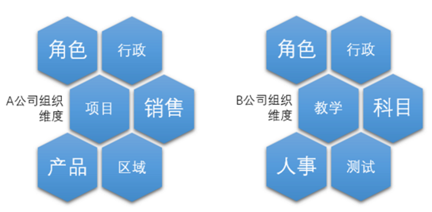
如行政维度:
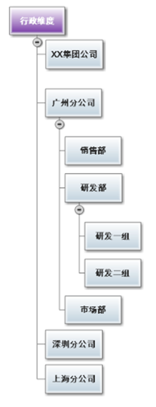
操作步骤
菜单路径: 组织管理-->组织维度,如下:
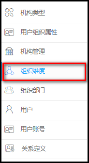
进入维度管理界面,如下所示:
在系统中默认的三个维度，行政维度，角色，职务，可以根据需求来定义维度
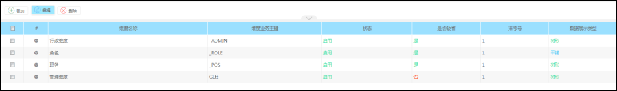
添加维度:
在工具栏中,点击【添加】按钮，进入如下界面，填写信息。
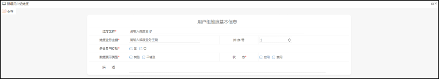
【说明】
是否参与授权：表示该维度下的用户组是否参与类似角色授权的操作。
数据展示类型：表示该维度下的用户组是否为树形还是平铺型，如为树型，表示用户组下可以有多个层级，否则只是平铺展示一层用户组。
维度等级管理：
维度等级管理具体在流程配置时选择审批人时用到，例如：需要某部门领导审批，那就可以选择部门以上的等级部门查找该领导
如为行政维度下的用户提供等级的管理：
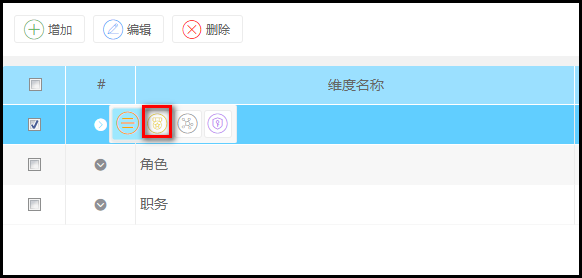
进入维度等级定义列表：
根据需求添加等级
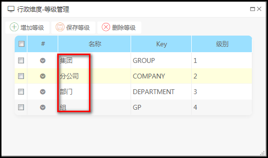
添加的维度等级将提供维度下的用户组属性的定义中。
维度关系定义
为用户的维度增加关系定义，即该维度下的用户组与其他用户或维度下的用户组的关系定义。
【操作】点操作列中的【维度关系定义】按钮，如：
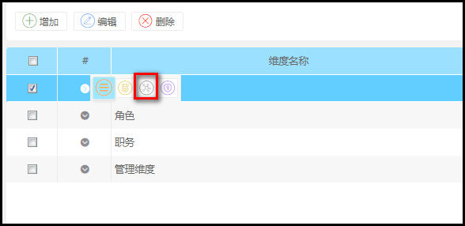
进入维度关系定义管理界面，如：

点【添加】按钮，则为该维度添加与该维度下的用户组的关系定义。
如我们可以定义该维度上的汇报关系，表示为该部门下与其他用户或组的关系。
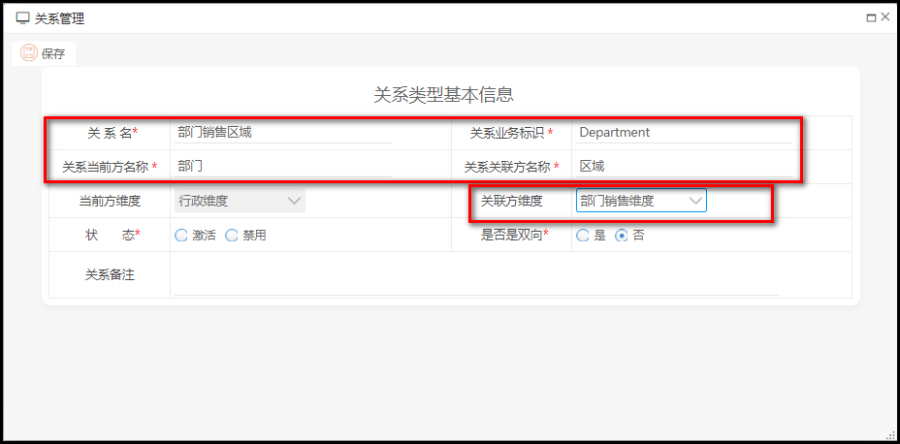
【说明】关系当前方，表示为当前维度所在的关系一方的名称，关联方表示另一方关系的名称，
当前方维度则表示当前维度，关联方维度表示是关系的另一方的维度，若为空则表示是关联个人的。
维度授权
为维度授权则表示该维度下的用户组由哪一些用户或角色来进行统一维护数据。
【操作】：
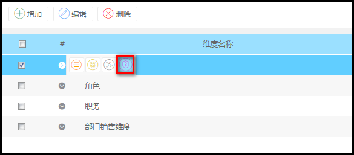
操作进入如下界面：
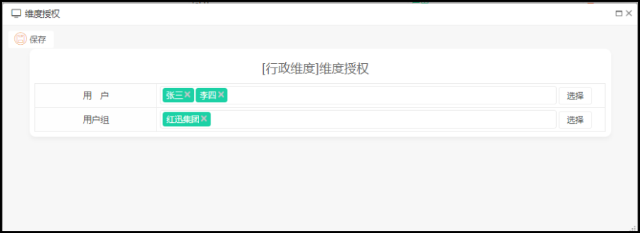
可选择对应的用户或用组，然后再点【保存】按钮则可。当以上用户进入部门角色时，则表示拥有该角色的才拥有该维度下的用户维护的权限。